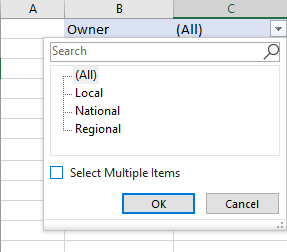
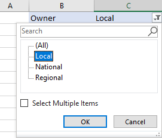
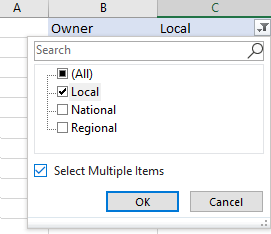

There seems to be a bug in the way the office JS reads the visible property of items in a filter of a pivot table. This addin will show the error under the following conditions:
There is a pivot table on a sheet named pivot table
The pivot table has a report filter in cell C3
There are at least three values to select in the report fitler
Steps to see the error:
Configure the report filter to show all items without the "show multiple items" checkbox checked as seen in the following image 
Click on the "Run" button. This will show the "visible" property of each item in the filter. This shows all to be visible as expected.
Now, select a single item to be used in the filter as shown here. 
Click the "Run" button. The visible property for each item in the filter will still be show "true" for each item even though only the selected items shoud be visible
Now, check the "Select Multiple Items" check box and select one or more items to be used in the filter as shown here. 
Click the "Run" button. The visible property will be reported correctly for each item in the filter.